Show other secondary papers
Asymptotic breathers in the Manakov system
Authors: Liming Ling, Boris A. Malomed, Yan-Hong Qin, Jin-Peng Yang, Hao-Jun Yin, Li-Chen Zhao
Type: theory · Category: other · PDF: https://arxiv.org/pdf/2610.26436v1
Analysis basis: full PDF text, analyzed in chunks
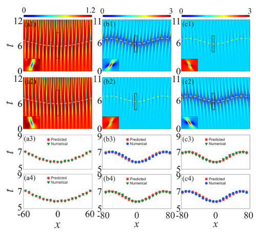
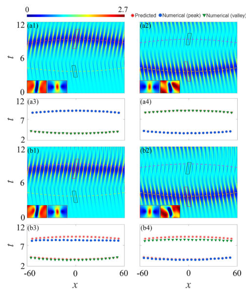
Summary. This paper develops an advanced asymptotic theory to predict how localized initial modulations generate specific, stable structures called Akhmediev breathers in the Manakov system. By matching generalized modulational instability modes to the breather state, the authors provide analytical formulas for the breathers' emergence points. This framework offers a powerful tool for controlling nonlinear wave dynamics, relevant for applications in optics and quantum physics.
Why it may be interesting. This work provides a rigorous, analytically derived mechanism to control the formation and placement of localized energy structures (breathers) in complex nonlinear wave systems, which is highly relevant for understanding light propagation in optical fibers or in Bose-Einstein condensates.
Detailed structure
Main problem. The paper aims to develop a predictive framework linking a localized initial perturbation to the exact location and structure of emerging Akhmediev breathers (ABs) in nonlinear wave systems.
Main result. The authors established an analytical, branch-selective theory that predicts the emergence and positioning of vector ABs, which was corroborated by numerical simulations.
Method. The core method involves developing a branch-resolved asymptotic theory by matching generalized modulational-instability (gMI) eigenmodes to the pre-formation expansion of the asymptotic vector AB state.
Model / system. The primary model is the Manakov system, a two-component integrable nonlinear-wave model, which governs coupled field components. The analysis extends to nonintegrable systems by including weak perturbations.
Key observables. Breather center positions and trajectories, total density $|q^{[1]}|^2$, and the temporal separation between multiple emerging breathers.
Important parameters / regimes. The nonlinearity parameter $\sigma$ (focusing/defocusing), the input perturbation envelope $f(x)$, and the gMI growth rate $G$.
Assumptions / limitations. The analysis relies on a locally matched asymptotic construction, assuming the perturbation envelope $f(x)$ has bounded logarithmic derivatives and remains non-zero.
Figures summary. Figure 1 illustrates the asymptotic AB excitation in both defocusing and focusing regimes, comparing predicted trajectories with numerical results. Figure 2 shows the evolution of two-AB excitations, comparing unperturbed versus nonintegrable scenarios.
Paper structure. The paper progresses by first establishing the single-breather formation theory via gMI matching, then extending this framework to derive analytical predictions for two-breather solutions, and finally demonstrating the robustness of these patterns under weak nonintegrable perturbations.
Abstract
We construct vector (two-component) asymptotic Akhmediev breathers in the Manakov system, matching generalized modulational-instability (gMI) eigenmodes to decaying tails of the breather states. The branch-resolved matching provides analytical results linking the gMI-perturbation envelopes to the positions of the emerging breathers. Numerical simulations of the system with the focusing and defocusing nonlinearities corroborate the analytical predictions for each MI branch. We further develop the asymptotic theory for two-breather solutions generated by two independent gMI modes, linking their temporal separation to the input envelopes and interaction-induced shifts. Further numerical simulations reveal that breather patterns exhibit robustness in the presence of weak nonintegrable perturbations. These findings establish a framework relating experimentally controllable input modulations to the branch-selective formation and positioning of breathers in multicomponent nonlinear systems.
Dependence of the acoustic propulsion of nano- and microcones on their orientation and aspect ratio
Authors: Johannes Voß, Raphael Wittkowski
Type: theory · Category: other · PDF: https://arxiv.org/pdf/2610.25383v1
Analysis basis: full PDF text, analyzed in chunks
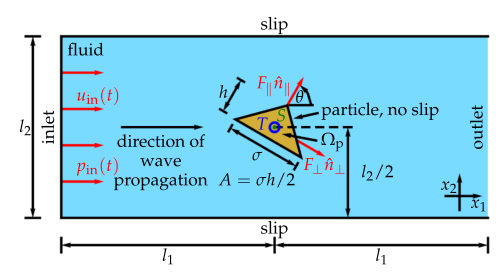
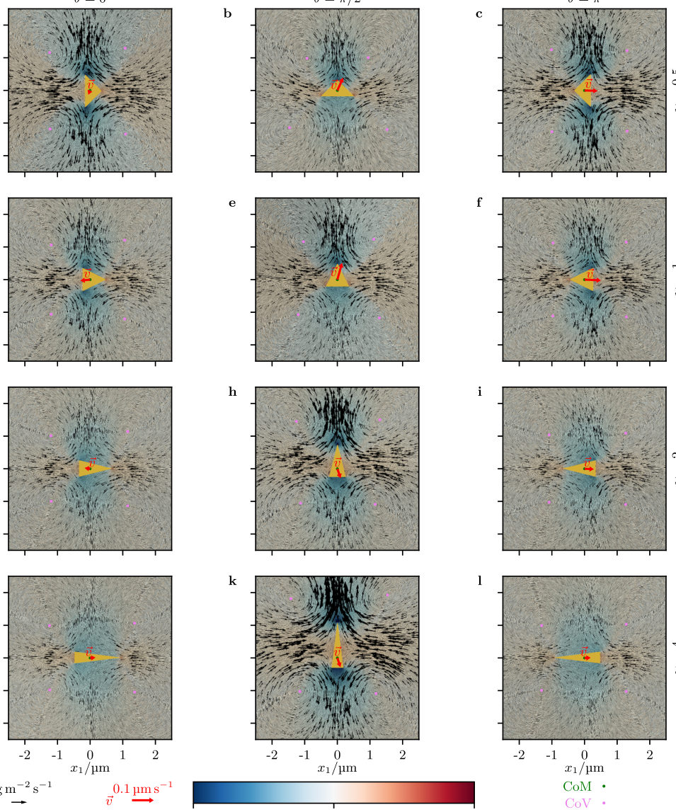
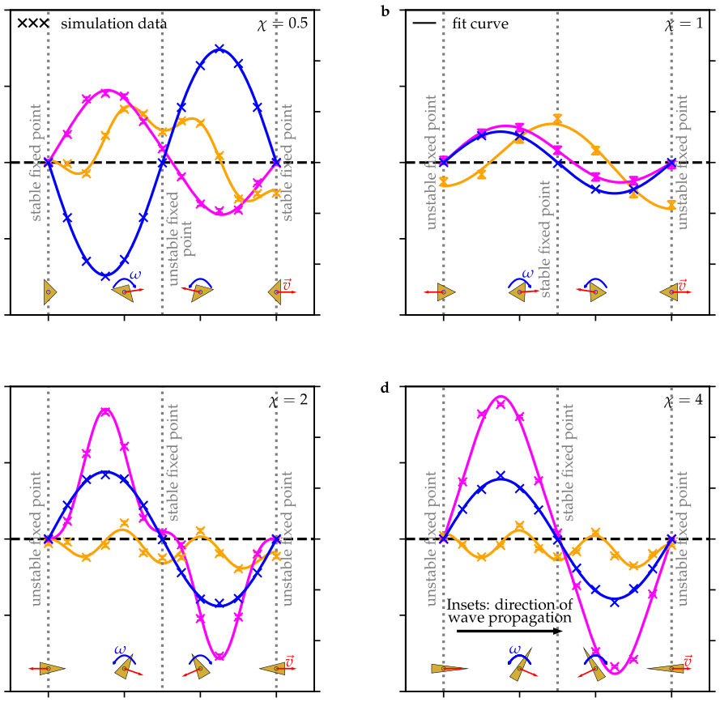
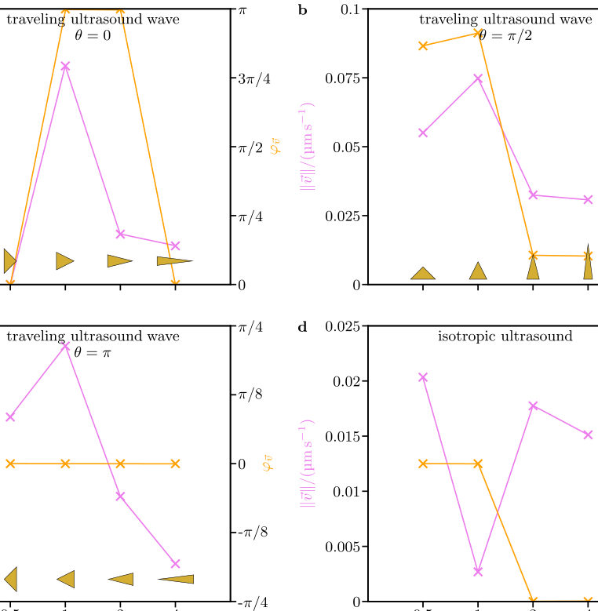
Summary. This paper simulates the acoustic propulsion of cone-shaped particles under ultrasound waves, focusing on how the propulsion force and torque change based on the cone's orientation and its aspect ratio. Using advanced acoustofluidic simulations, the authors demonstrate a strong dependence on geometry and identify a specific aspect ratio ($\chi=1/2$) that maximizes the average propulsion force. This work provides valuable quantitative data and an analytic model for understanding shape-dependent actuation at the micro- and nano-scale.
Why it may be interesting. While the core physics is classical fluid dynamics, the detailed analysis of non-linear, orientation-dependent forces and the identification of optimal geometric parameters ($\chi=1/2$) for maximum propulsion could inspire models for active matter or controlled energy transfer in quantum systems.
Detailed structure
Main problem. The study investigates how the acoustic propulsion force and torque acting on cone-shaped colloidal particles depend on the particle's orientation and its aspect ratio when exposed to an ultrasound wave.
Main result. The acoustic propulsion exhibits a strong dependence on orientation, and the orientation-averaged propulsion is found to be particularly strong for an aspect ratio of 1/2.
Method. The research employs acoustofluidic simulations using OpenFOAM to solve the Navier-Stokes equations, calculating time-averaged forces and torques.
Model / system. The system involves cone-shaped colloidal particles (nano- and microcones) immersed in a fluid, subjected to a planar traveling ultrasound wave. Key variables include the aspect ratio (height-to-diameter ratio, $\chi$) and the particle's polar orientation ($ heta$).
Key observables. Time-averaged propulsion forces ($F_\parallel, F_\perp$), torque ($T$), and resulting propulsion velocities ($v_{\parallel}, v_{\perp}, \omega$).
Important parameters / regimes. Aspect ratio ($\chi$), particle orientation ($ heta$), ultrasound frequency ($f=1 ext{ MHz}$), and various dimensionless numbers like the Euler number ($Eu$) and Reynolds numbers ($Re$).
Assumptions / limitations. The particle position is assumed fixed (infinite mass density), and the simulation assumes the particle is stationary in the lab frame.
Figures summary. The notes mention figures showing the time-averaged flow field ($\langle ho\vec{u} angle$ and $\langle p -p_0 angle$) dependence on $ heta$ and $\chi$, and plots of $v_{\parallel}( heta)$ for different aspect ratios.
Paper structure. The paper extends previous work by systematically varying the aspect ratio ($\chi$) while simulating the interaction of cones with a traveling ultrasound wave. It analyzes the force/torque dependence on $ heta$ and $\chi$, and concludes by providing an analytic representation of the simulation results.
Abstract
Recent research revealed the orientation-dependent propulsion of a cone-shaped colloidal particle that is exposed to a planar traveling ultrasound wave. Here, we extend the previous research by considering nano- and microcones with different aspect ratios and studying how the propulsion of a particle depends on its orientation and aspect ratio. We also study how the orientation-averaged propulsion of a cone-shaped particle, which corresponds to an isotropic ultrasound field, depends on its aspect ratio and identify an aspect ratio of 1/2 where the orientation-averaged propulsion is particularly strong. To make our simulation results easier reusable for follow-up research, we provide a corresponding simple analytic representation.
Finite-size scaling of spin-wave scattering and enhancement in magnonic Fabry-Pérot nanoresonators
Authors: Anton Lutsenko, Sebastiaan van Dijken
Type: theory · Category: other · PDF: https://arxiv.org/pdf/2610.26277v1
Analysis basis: full PDF text, analyzed in chunks
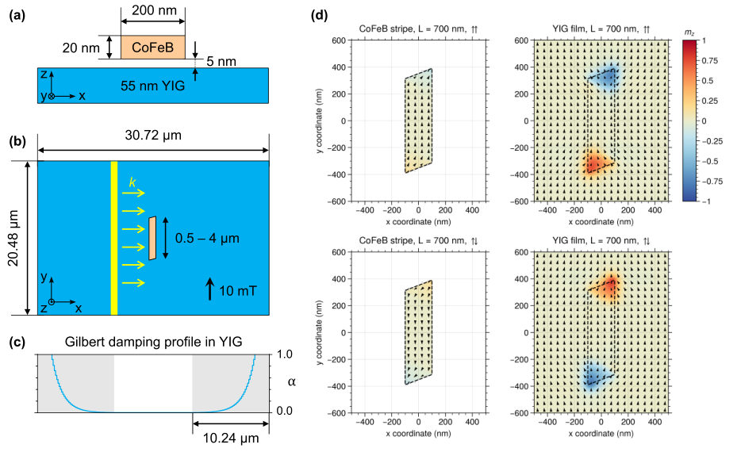
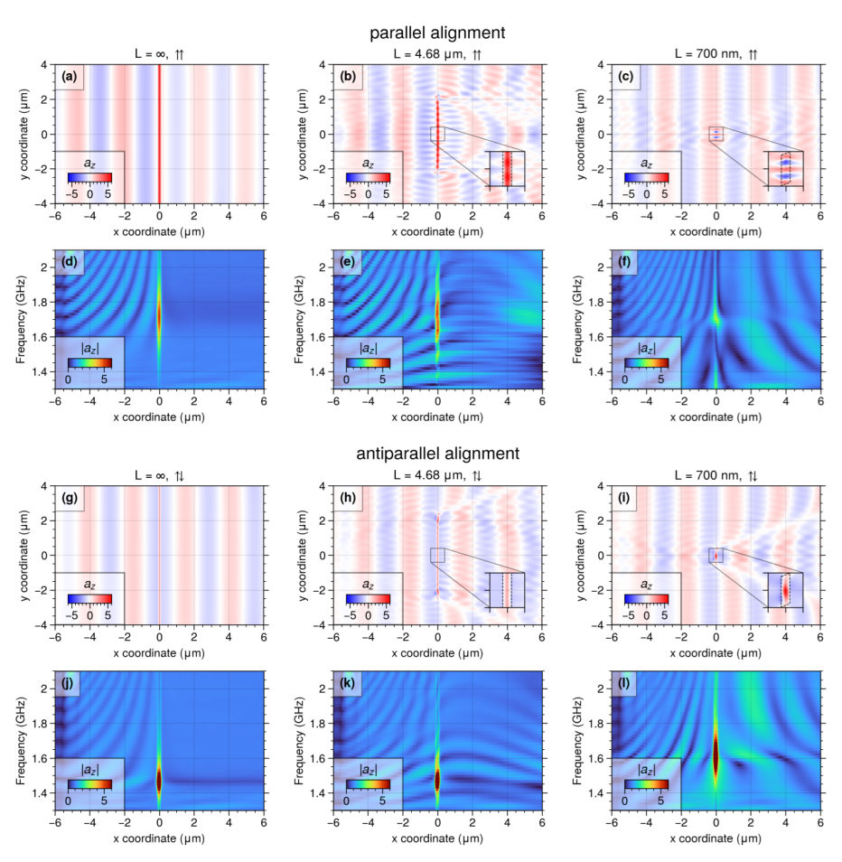
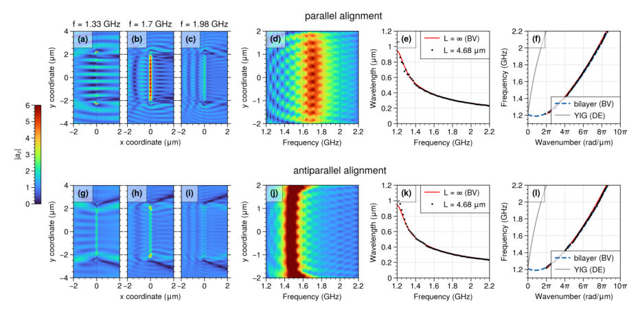
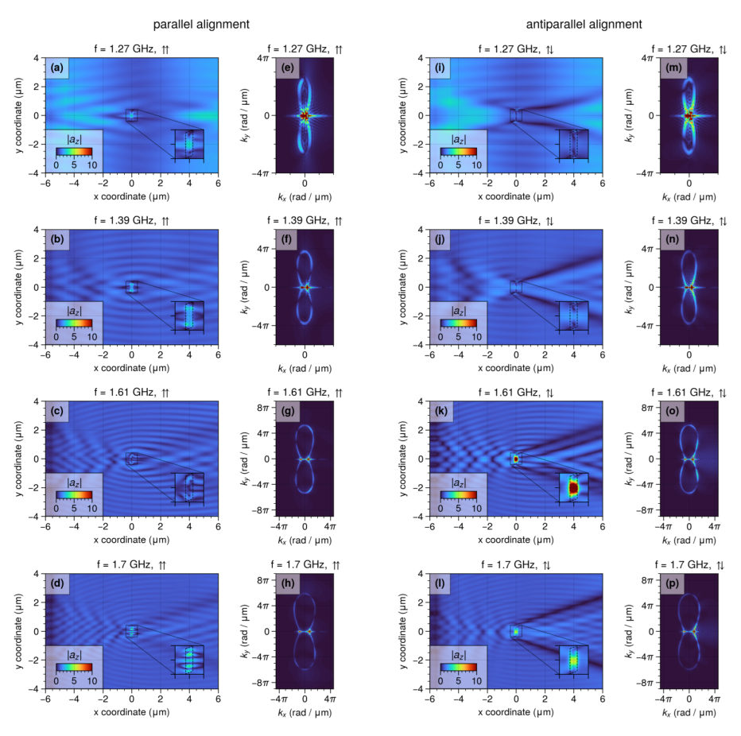
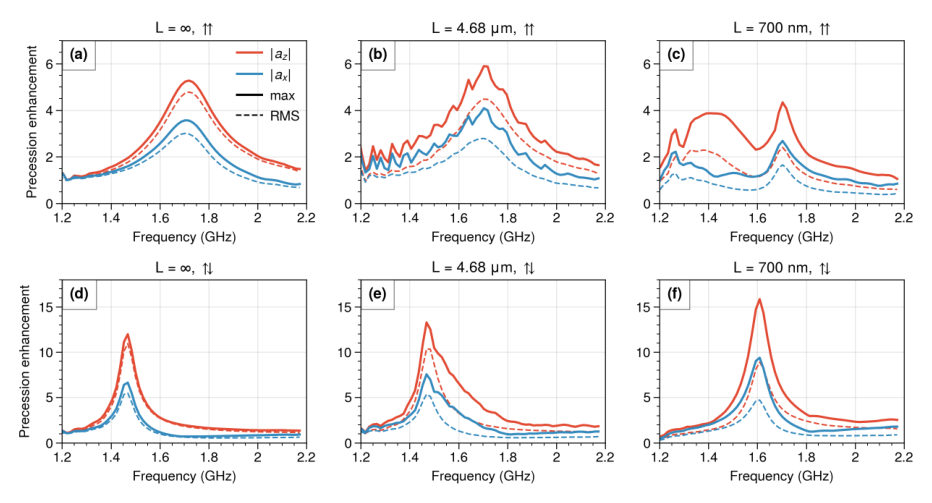
Summary. This work simulates the size-dependent physics of magnonic Fabry-Pérot resonators, showing how reducing the stripe length fundamentally changes the spin-wave response. The key finding is that sub-micrometer resonators, particularly in the antiparallel magnetic state, support a single, strongly enhanced mode that can be tuned for use in reconfigurable nonlinear nodes for magnonic neural networks.
Why it may be interesting. The strong, tunable, and highly enhanced nonlinear response achieved in the sub-micrometer AP state makes this structure a promising candidate for implementing complex logic gates or memory elements in solid-state magnonic circuits.
Detailed structure
Main problem. The study investigates how the spin-wave scattering and energy enhancement properties of magnonic Fabry-Pérot nanoresonators change as the physical length of the ferromagnetic stripe is reduced from an infinite limit.
Main result. Below a critical length of approximately 1.2 $\mu$m, the resonator exhibits a strong divergence in behavior between parallel and antiparallel magnetic configurations, supporting a single, highly enhanced mode in the AP state.
Method. The research relies on performing detailed micromagnetic simulations to model the spin-wave dynamics within the coupled YIG/CoFeB structure.
Model / system. The system is a hybrid magnonic Fabry-Pérot resonator consisting of a CoFeB stripe dipolar-coupled to a YIG film. The simulations track spin-wave transmission, precession amplitude, and scattering behavior as a function of stripe length and magnetic configuration.
Key observables. Spin-wave transmission gaps, out-of-plane precession amplitude enhancement factors, and the evolution of quantized resonance modes.
Important parameters / regimes. Stripe length ($L$) varying from $\infty$ down to 640 nm; magnetic configurations (Parallel vs. Antiparallel); stripe width (200 nm) and YIG thickness (55 nm).
Assumptions / limitations. The analysis assumes that the difference in behavior between P and AP configurations is governed by the static stray field of the stripe ends, which dictates mode confinement.
Figures summary. Figures illustrate the evolution of spin-wave amplitude and resonance features across different stripe lengths, comparing the ideal 1D cavity behavior to the complex scattering patterns observed in sub-micrometer structures.
Paper structure. The paper progresses by first establishing the ideal 1D cavity limit ($L=\infty$), then analyzing the transition through few-$\mu$m lengths where end effects (BV waves) appear, culminating in the distinct, highly enhanced single-mode behavior observed below $1.2 \mu$m.
Abstract
Magnonic neural networks require compact resonant nodes that scatter spin waves efficiently, concentrate spin-wave energy and can be reconfigured. Hybrid magnonic Fabry-Pérot resonators, formed by a ferromagnetic-metal stripe dipolar-coupled to a yttrium iron garnet (YIG) film, provide low-loss and programmable control of spin-wave transmission, but have so far been studied only for stripes that are long compared with the spin-wave wavelength. Here we use micromagnetic simulations to determine how the response of a 200-nm-wide CoFeB stripe on a 55-nm-thick YIG film evolves as the stripe length is reduced from infinity to 640 nm. An infinitely long stripe acts as a one-dimensional cavity that opens a transmission gap at the first-order resonance (1.70 GHz and 1.47 GHz for the parallel and antiparallel magnetic configuration) and enhances the out-of-plane precession amplitude in the YIG film by factors of about 5 and 12, without distorting the transmitted wavefront. For lengths of a few micrometers, backward-volume spin waves emitted from the stripe ends modulate the precession along the stripe and fragment the reflected and transmitted wavefronts. Below about 1.2 micrometer, the resonator scatters incident spin waves over the entire isofrequency contour of the film, with caustic beams that are most pronounced in the antiparallel configuration. In this regime the parallel configuration supports weakly enhanced quantized modes, whereas the antiparallel configuration supports a single mode with an out-of-plane enhancement of about 15. The width, thickness and shape of the stripe tune this mode by 50-100 MHz, and its strong enhancement lowers the onset of nonlinear frequency shift and fold-over to incident amplitudes of a few percent of the saturation magnetization. Sub-micrometer magnonic resonators are therefore promising reconfigurable nonlinear nodes for magnonic networks.
Second Chern Number Protected Gapless Vortex Modes in Superconducting Weyl Semimetals
Authors: Zhicheng Zhang, Jiangping Hu
Type: theory · Category: other · PDF: https://arxiv.org/pdf/2610.24401v1
Analysis basis: full PDF text, analyzed in chunks
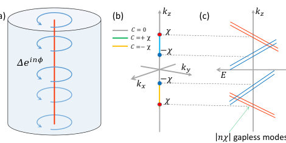
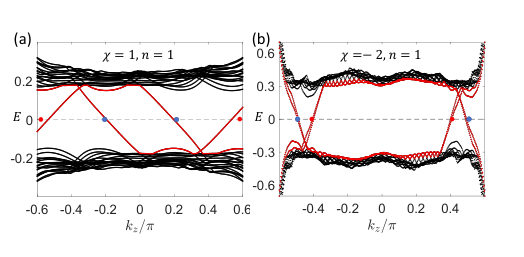
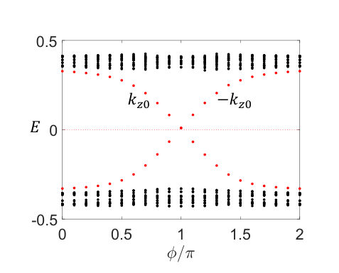
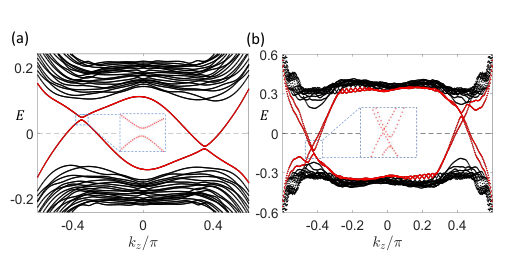
Summary. This paper theoretically analyzes the gapless vortex bound states in superconducting Weyl semimetals. It establishes that the number of these modes is topologically protected by the second Chern number ($C_2$), which is calculated using a synthetic four-dimensional space. The findings confirm the robustness of these gapless modes against certain symmetry-breaking perturbations.
Why it may be interesting. The topological characterization using the second Chern number and the connection to flux pumping provide deep insights into how superconducting pairing modifies topological electronic states, which is relevant for understanding exotic superconducting phases.
Detailed structure
Main problem. The study investigates the topological nature and existence of gapless vortex bound states (VBSs) within superconducting Weyl semimetals.
Main result. The number of gapless modes around each Weyl point is determined by $|n\chi|$, and this topological invariant is characterized by the second Chern number ($C_2$) in a synthetic four-dimensional space.
Method. The analysis employs theoretical calculations involving the Bogoliubov-de Gennes (BdG) Hamiltonian and calculating the second Chern number via a multi-dimensional integral over a synthetic space.
Model / system. The system is superconducting Weyl semimetals, modeled using effective $k \cdot p$ Hamiltonians derived from lattice models for both linear and quadratic Weyl semimetals.
Key observables. Number of gapless vortex modes ($|n\chi|$), the second Chern number ($C_2$), and the energy-momentum dispersion relation of the VBSs.
Important parameters / regimes. Vorticity ($n$), Weyl point chirality ($\chi$), and the superconducting pairing gap ($\Delta$).
Assumptions / limitations. The analysis assumes $s$-wave singlet pairing and relies on low-energy effective Hamiltonians derived from lattice models, sometimes setting the chemical potential $\mu=0$.
Figures summary. Figures illustrate the setup of SC Weyl semimetals with inserted flux, showing the $|n\chi|$ gapless modes. Other figures demonstrate the pumping of spectra and the VBS energy-momentum relation for varying chirality and vorticity.
Paper structure. The paper progresses from defining the physical system and Hamiltonian to deriving the topological invariant ($C_2$) using a synthetic 4D space, and finally calculating the resulting gapless modes and proving their robustness.
Abstract
We have studied the vortex bound states of superconducting linear and quadratic Weyl semimetals with time reversal symmetry. For vortex with vorticity $n$ (vortex line along $z$ direction) and Weyl semimetals with Weyl point chirality $χ$, there are $\vert nχ\vert$ gapless vortex modes around the location of each Weyl point in superconducting Weyl semimetals. We show that the appearance of $\vert nχ\vert$ gapless vortex modes originates from the imbalanced pumping of flux bound states between Chern insulators obtained at $k_{z}$ and $-k_{z}$ in Weyl semimetals. Such a physical picture is verified by numerical calculations on lattice models. Moreover, the gapless modes around each Weyl point can be characterized by the second Chern number defined in a synthetic four-dimensional space based on the effective BdG Hamiltonian. Finally, these gapless vortex modes are found to be robust against rotational symmetry-breaking terms.
Strain-induced disorder from Schottky gates on high mobility 2DEGs
Authors: Sambit Mohapatra, Lukas Berg, Jean-Baptiste Cuvellier, Yan Sun, Abdelhanin Aassime, Alan Durnez, Antonella Cavanna, Dominique Mailly, Ulf Gennser
Type: both · Category: strongly correlated electrons · PDF: https://arxiv.org/pdf/2610.26607v1
Analysis basis: full PDF text, analyzed in chunks
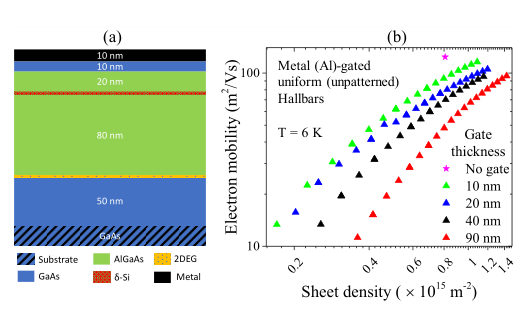
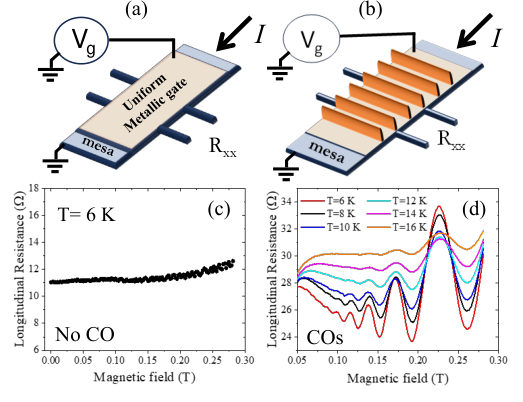
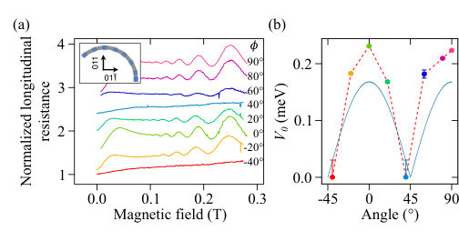

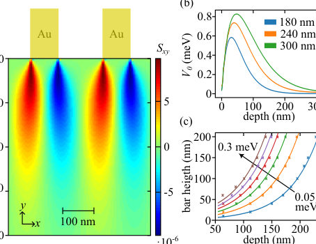
Summary. This paper demonstrates that metallic gates degrade the performance of high-mobility 2DEGs by inducing strain. By analyzing commensurability oscillations, the authors prove that this disorder originates from strain fields, which are modeled using detailed simulations incorporating the piezoelectric effect. The findings offer a pathway to designing gates that minimize detrimental strain effects.
Why it may be interesting. The work provides a concrete, experimentally verifiable mechanism (strain coupling) for disorder in highly tunable quantum systems, which is crucial for engineering quantum devices where material interfaces and strain control are paramount.
Detailed structure
Main problem. The study investigates how strain induced by metallic Schottky gates degrades electron mobility and suppresses correlated quantum Hall states in high-mobility 2DEGs.
Main result. The mobility reduction and the observation of commensurability oscillations (COs) are successfully attributed to strain fields generated by the patterned gates, which are confirmed by detailed simulations.
Method. The research combines low-temperature magnetoresistance measurements (observing COs) with advanced finite-element simulations (COMSOL Multiphysics) to model strain propagation and its coupling to the 2DEG potential via the piezoelectric effect.
Model / system. The physical system is a 2DEG in GaAs/AlGaAs heterostructures patterned with metallic superlattices. The model incorporates strain mechanics, the piezoelectric effect, and quantum transport theory (manifested through COs).
Key observables. Electron mobility ($\mu$), commensurability oscillations ($ ho_{xx}(B)$), and the strain tensor components ($S_{xx}, S_{yy}, S_{xy}$).
Important parameters / regimes. Gate periodicity ($P$), metal thickness, 2DEG depth ($D$), and temperature ($T$).
Assumptions / limitations. The primary assumption is that strain is the dominant source of disorder; the analysis relies on the first-order piezoelectric approximation and simplified boundary conditions in simulations.
Figures summary. Figures compare mobility vs. density for different gate thicknesses, show COs in patterned vs. unpatterned gates, and map simulated strain components ($S_{xy}$) and potential modulation ($V_0$) dependence on gate geometry and depth.
Paper structure. The paper progresses from initial observations of mobility degradation with uniform gates to using patterned gates to induce measurable COs. It then quantitatively links the CO amplitude to simulated strain fields, confirming the role of piezoelectricity and developing guidelines for gate design.
Abstract
Electrostatic gates on two-dimensional electron gases (2DEGs) in GaAs/AlGaAs heterostructures are essential for numerous studies of correlation driven phenomena, many performed within the fractional quantum Hall effect. However, the most commonly used type of gates, the metallic Schottky gate, has the propensity to adversely impact the electron mobility and suppress the fractional quantum Hall states. Here we demonstrate through commensurability oscillations under specially designed nanostructured superlattice gates, that strain effects are responsible for the mobility reduction. The experimental results agree well with COMSOL Multiphysics simulations. In a regular, unpatterned gate the disordered, granular nature of the metal film fills the same role as the superlattice in creating a strain field penetrating down to the 2DEG, as we show with a simplified model. These results will help in understanding, improving and finding novel methods to reduce strain-induced disorder in gated high-mobility 2DEGs.
Strain-Tunable High-$T_c$ Superconductivity in Layered R3m B$_2$CN
Authors: Durjay Dhali, Arafat Rahman, Tareq Mahmud, Alamgir Kabir
Type: theory · Category: strongly correlated electrons · PDF: https://arxiv.org/pdf/2610.24799v1
Analysis basis: full PDF text, analyzed in chunks
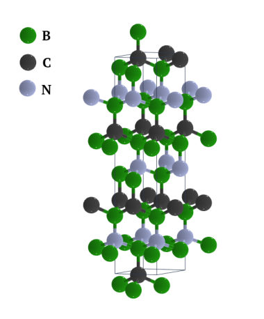
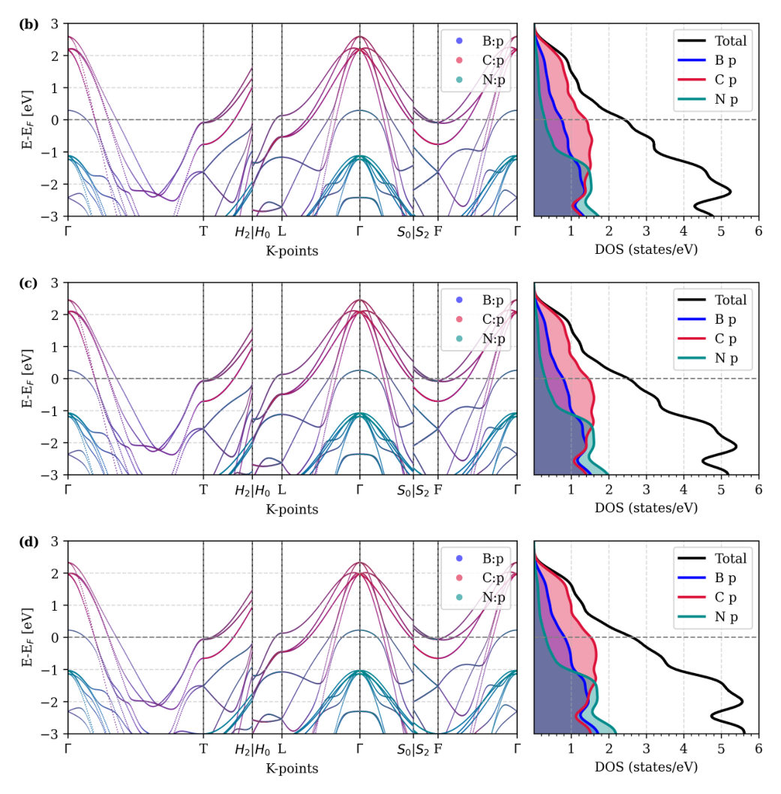
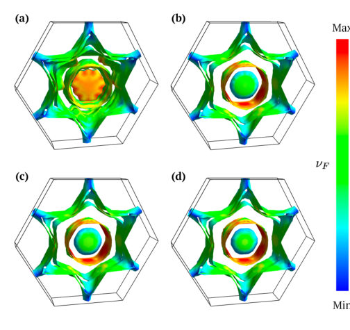
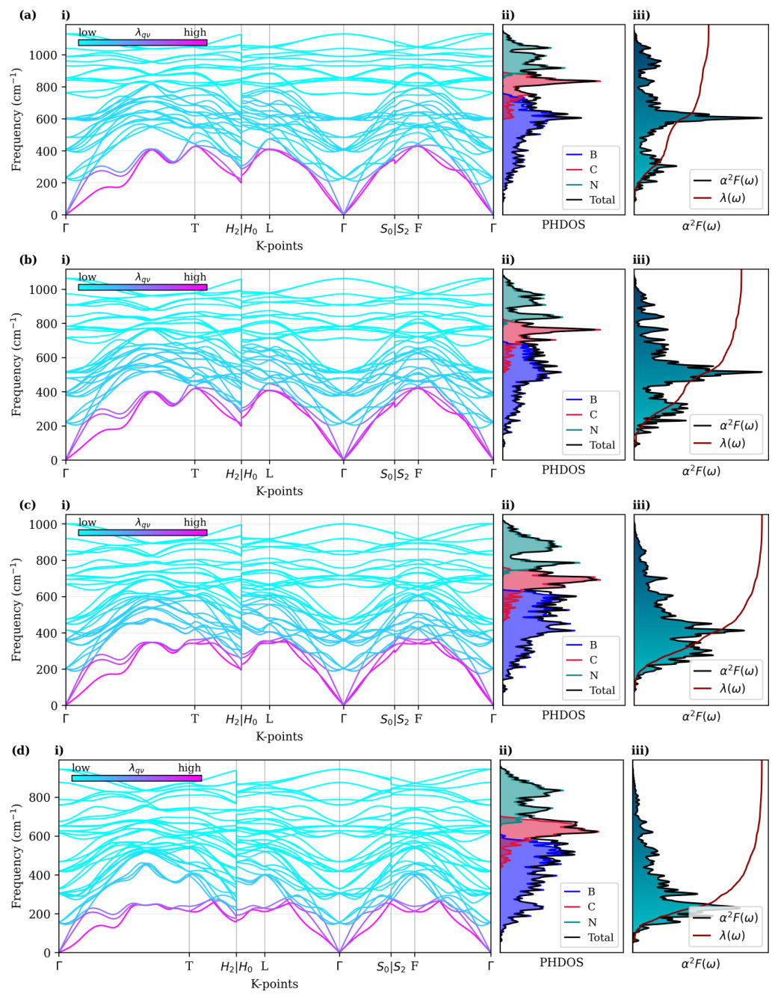
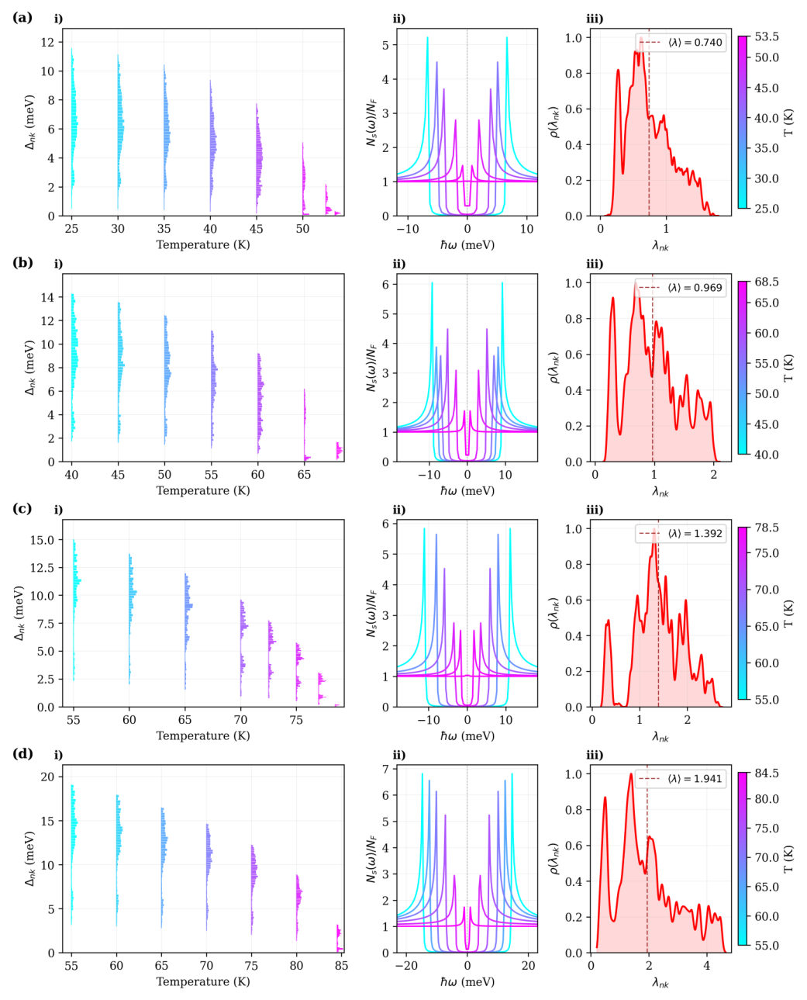
Summary. This theoretical study demonstrates that applying tensile strain to $ ext{R}3m ext{B}_2 ext{CN}$ enhances its superconducting properties. By calculating changes in electron-phonon coupling ($\lambda$) using DFT and the Migdal-Eliashberg theory, the authors show that strain drives $T_c$ above the liquid-nitrogen boiling point. This work highlights strain engineering as a powerful tool for realizing high-temperature superconductors.
Why it may be interesting. The direct link established between mechanical strain, lattice dynamics (phonon softening), and the enhancement of electron-phonon coupling ($\lambda$) to boost $T_c$ is a key concept in understanding emergent quantum phenomena in solid-state materials.
Detailed structure
Main problem. The study investigates how applying isotropic tensile strain tunes the superconducting properties and critical temperature ($T_c$) in the layered $ ext{R}3m ext{B}_2 ext{CN}$ material.
Main result. Tensile strain significantly enhances the electron-phonon coupling constant ($\lambda$) from 0.967 to 2.620, leading to a monotonic increase in $T_c$ from 53.5 K to 84.5 K, crossing the liquid-nitrogen boiling point at 6% strain.
Method. The research employs Density Functional Theory (DFT) combined with advanced calculations like DFPT for lattice dynamics and the anisotropic Migdal-Eliashberg equations for superconductivity.
Model / system. The physical system is the layered $ ext{R}3m ext{B}_2 ext{CN}$ crystal, analyzed across tensile strains from 0% to 6%. The theory models superconductivity via electron-phonon coupling, which is sensitive to strain-induced changes in electronic structure and phonon softening.
Key observables. Superconducting transition temperature ($T_c$), electron-phonon coupling constant ($\lambda$), phonon softening, and the superconducting gap ($\Delta_0/k_B T_c$).
Important parameters / regimes. Strain levels (0% to 6%), $\lambda$ (0.967 to 2.620), and the Coulomb pseudopotential ($\mu^*$).
Assumptions / limitations. The analysis assumes the material remains mechanically and dynamically stable across the entire strain range, and it utilizes the anisotropic Migdal-Eliashberg formalism.
Figures summary. Figures illustrate the crystal structure, electronic band structures and DOS under strain, and phonon dispersions, while tables summarize elastic constants and superconducting gap values.
Paper structure. The paper systematically analyzes the mechanical stability (Born-Huang criteria) first, followed by electronic structure changes (band narrowing, $N(E_F)$ increase), and finally calculates the resulting superconducting properties using the anisotropic Eliashberg equations.
Abstract
Using DFPT and Wannier-interpolated matrix elements in EPW, we find that isotropic tensile strain of 0--6\% narrows the B:2$p$/C:2$p$ bands at the Fermi level while softening the phonon branches most strongly coupled to them, driving the coupling constant $λ$ from 0.967 to 2.620. All four strained configurations remain mechanically and dynamically stable, satisfying the Born--Huang criteria with no imaginary phonon modes at any strain level. The fully anisotropic Migdal--Eliashberg equations give a $T_c$ that rises monotonically from 53.5~K to 84.5~K across the strain series, crossing the liquid-nitrogen boiling point at 6\% strain. The SISSO-based machine-learning model in EPW agrees with the anisotropic Migdal--Eliashberg $T_c$ values to within 10~K across the strain series.